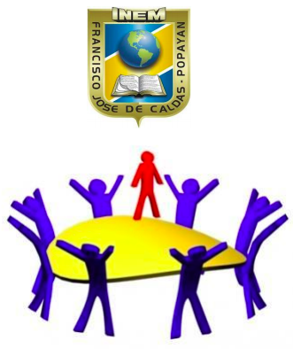

Aunque la escuela es tradicionalmente la institución en la que se delega la educación de los niños y jóvenes, sin duda el núcleo familiar debe ser el punto de partida desde el que se infunden las primeras actitudes y valores hacia la sociedad, y desde dónde se mantienen activos los lazos de compromiso hacia la educación.
La ley general de educación establece que corresponde al Estado, la familia y la sociedad velar por la calidad de la educación y promover el acceso a ella.
Es por eso que la participación de los padres como actores destacados en la estructura de las instituciones educativas es fundamental.
En el país esta participación se hace posible a través de los consejos directivos y de las asociaciones de padres, cuya labor principal es establecer relaciones de cooperación entre los directivos de las instituciones y los padres de familia como gestores, participantes y reguladores del proceso educativo.
Contribuir con el Rector en el análisis, difusión y uso de los resultados de las evaluaciones periódicas de competencias y pruebas de estado.
Exigir que el establecimiento con todos sus estudiantes participe en las pruebas de competencias y de estado realizadas por el ICFES.
Apoyar las actividades artísticas, científicas, técnicas y deportivas que organice el establecimiento educativo, horientadas a mejorar las competencias de los estudiantes en las distintas Áreas incluida la ciudadana y la creación de la cultura de la legalidad.
Participar en la elaboración de los planes de mejoramiento y en el logro de los objetivos planteados.
Promover actividades de formación de los Padres de Familia encaminadas a desarrollar estrategias de acompañamiento a los estudiantes para facilitar el afianzamiento de los aprendizajes, fomentar la práctica de hábitos de estudio extraescolares, mejorar la autoestima y el ambiente de convivencia y especialmente aquellas destinadas a promover los derechos del niño.
Propiciar un clima de confianza, entendimiento, integración, solidaridad y concertación entre todos los estamentos de la comunidad educativa.
Presentar propuestas de mejoramiento del manual de convivencia en el marco de la constitución y la ley.
Colaborar en las actividades destinadas a la promoción de la salud física y mental de los educandos, la solución de las dificultades de aprendizaje, la detección de problemas de integración escolar y el mejoramiento del medio ambiente.
Elegir al Padre de Familia que participará en la comisión de evaluación y promoción de acuerdo con el decreto 230 de 2002.
Presentar las propuestas de modificación del proyecto educativo institucional que surjan de los Padres de Familia de conformidad con lo previsto en los artículos 14, 15 y 16 del decreto 1860 de 1994.
Elegir los representantes de los Padres de Familia al Consejo Directivo del establecimiento educativo.
| Nombres | Cargo | Grado |
|---|---|---|
| Juan Carlos Lozano | Presidente | 11-01 |
| Sorely E. Zambrano | Secretaria | 10-01 |
| Sandra M.Robledo | Seguimiento | 10-01 |
| Elizabeth Cobo | Seguimiento | 00-00 |
| Jose H.Zuñiga | Seguimiento | 00-00 |
| Nory C. Galarza | Seguimiento | 00-00 |
| Adriano Restrepo | Seguimiento | 11-01 |
| Leonardo A. Ruiz | Seguimiento | 9-02 |
| Fredy Izquierdo | Seguimiento | 00-00 |
| Paola A. Cardoba | Seguimiento | 6-02 |
| Fanny Alvares | Seguimiento | 00-00 |
| Berenice Chacon | Seguimiento | 6-02 |